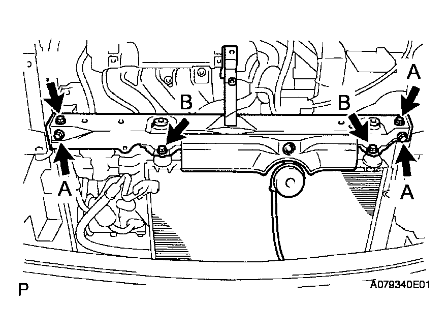
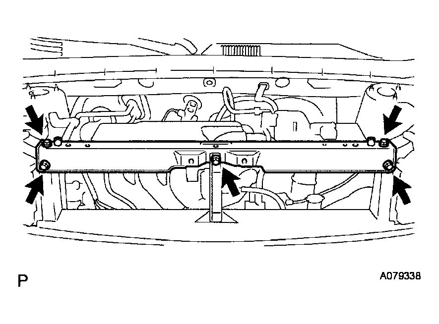

Cooling (1NZ-FE): Radiator: Installation
- INSTALL RADIATOR ASSEMBLY
- Install the 2 radiator support cushions and radiator support lower onto the radiator.
- Install the water filler with the 2 bolts.
Torque: 7.5 N*m (76 kgf*cm, 66 in.*lbf)
- Install the fan shroud with fan with the 3 bolts.
Torque: 7.5 N*m (76 kgf*cm, 66 in.*lbf)
- Install the radiator, and connect the connector to the cooling fan motor.
- INSTALL RADIATOR SUPPORT SUB-ASSEMBLY UPPER
- Install the radiator support upper with the 4 bolts.
Torque: 5.0 N*m (51 kgf*cm, 44 in.*lbf) for bolt A
- Install the condenser to the radiator support upper with the 2 bolts.

Courtesy of © TOYOTA, LICENSE AGREEMENT TMS1002Torque: 9.8 N*m (100 kgf*cm, 7.2 ft.*lbf) for bolt B
- Connect the connector to the horn.
- Install the radiator support upper with the 4 bolts.
- INSTALL RADIATOR SUPPORT OPENING COVER
- INSTALL HOOD LOCK SUPPORT BRACE
- Install the support brace with the 5 bolts.

Courtesy of © TOYOTA, LICENSE AGREEMENT TMS1002Torque: 5.0 N*m (51 kgf*cm, 44 in.*lbf)
- Install the support brace with the 5 bolts.
- INSTALL HOOD LOCK ASSEMBLY
- Temporarily install the hood lock with the 3 bolts and clip.
- ADJUST HOOD LOCK ASSEMBLY
- INSTALL FRONT BUMPER COVER (See INSTALLATION )
- INSTALL FRONT FENDER LINER LH (See INSTALLATION )
- INSTALL FRONT FENDER LINER RH (See INSTALLATION )
- INSTALL RADIATOR GRILLE (See INSTALLATION )
- CONNECT OIL COOLER OUTLET HOSE (for Automatic Transaxle)
- CONNECT OIL COOLER INLET HOSE (for Automatic Transaxle)
- CONNECT RADIATOR HOSE OUTLET
- CONNECT RADIATOR HOSE INLET
- CONNECT CABLE TO NEGATIVE BATTERY TERMINAL
- ADD ENGINE COOLANT
- CHECK FOR ENGINE COOLANT LEAKS (See WATER PUMP )